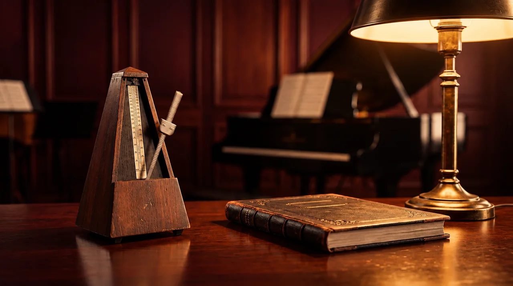

LISTEN · PRACTICE · IMPROVE
Find your pulse.

Choose piano, guitar, flute or violin: synthesized timbres with no downloads. Your choice is remembered in this browser.
Listen to a pattern, then reproduce it by tapping the button or pressing Space. Feedback compares your onsets with the expected times.
Sound starts when you press a button. On mobile, check your media volume. Use headphones to practice.
Reproduce the rhythm
There are four count-in beats. Start tapping on the next beat; the metronome continues for the eight beats of the exercise.
0 taps
If your taps consistently arrive late, enter that delay in Compensation. For example, 80 ms subtracts 80 ms from each tap. Avoid Bluetooth to reduce latency.
Results and guidance
Complete an attempt to see your feedback.
Your progress
Results are saved in this browser when you complete an attempt.
View my practice →